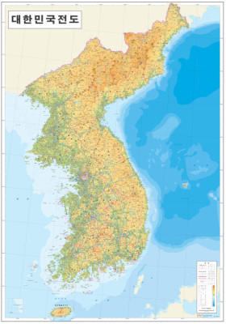

대한민국은 동아시아의 한반도 남부에 있는 공화국이다. 서쪽으로는 서해를 사이에 두고 중화인민공화국이, 동쪽으로는 동해를 사이에 두고 일본이 있으며 북쪽으로는 조선민주주의인문공화국과 맞닿아 있다. 수도는 서울특별시이며, 국기는 태극기, 국가는 애국가, 공용어는 한국어와 한국 수어이다. 대한민국 국내에서는 간단히 한국(韓國), 남한(南韓) 등으로도 부른다.
한반도는 제3기 마이오세 이후에 일어난 단층과 요곡운동의 결과 동쪽으로는 높은 산지가 급경사로 동해안에 임박하고 서쪽으로는 서서히 고도가 낮아진다. 이를 동고서저의 경동지형이라 한다. 높은 산들은 대부분 동부 지방에 치우쳐서 한반도의 등줄기라 불리는 태백산맥에 자리한다. 태백산맥의 대표적인 산이 설악산이다. 태백산맥의 남서쪽으로 소백산맥이 이어지며 그 중에는 지리산이 유명하다. 제주도에는 대한민국에서 가장 높은 산이자 사화산인 한라산이 있다.
한반도의 서쪽은 황해, 동쪽은 동해, 남쪽은 남해와 맞닿아 있어 삼면이 바다로 둘러싸인 반도형이며, 가장 큰 부속 도서인 제주도 남쪽으로는 동중국해와 접한다. 황해와 남해 연안은 해안선이 복잡한 리아스식 해안으로 조수 간만의 차가 클 뿐만 아니라 해안 지형도 꽤 평탄하여 넓은 간석지가 전개된다. 또한 수많은 섬이 있어서 다도해라고도 불린다. 반면에 동해 연안은 대부분 해안선이 단조롭고 수심이 깊으며 간만의 차가 적다. 해안 근처에는 사구·석호 등이 형성되어 있고 먼 해상에 화산섬인 울릉도가 있으며 그보다 동쪽으로 약 87.4km 거리에 대한민국 최동단인 독도가 위치한다.
북위 33도~38도, 동경 126~131도에 걸쳐 있어 냉대 동계 소우 기후와 온대 하우 기후, 온난 습윤 기후가 나타난다. 겨울에 북부 지역은 편서풍으로 인해 시베리아와 몽골 고원의 영향을 받아 대륙성 기후를 띠어서 건조하고 무척 추우나 남부 지역은 이런 영향을 적게 받아 상대적으로 온난한 편이다. 여름에는 태평양의 영향을 받아 해양성 기후의 특색을 보여서 고온다습하다. 계절은 사계절이 뚜렷이 나타나며 대체로 북부 지역은 여름과 겨울이 길고 남부 지역은 봄과 가을이 길다. 비는 주로 여름에 많이 내리는데 연 강수량의 50 ~ 60%가 이때 집중된다. 이를 장마라고 하며 특히 6월 말에서 7월 중순까지를 장마철이라 한다. 각 지역의 연 평균 강수량은 중부 지방이 1100 ~ 1400mm, 남부 지방이 1000 ~ 1800mm, 경북 지역이 1000 ~ 1200mm이다. 경상남도 해안 지역은 약 1800mm이며 제주도는 1450 ~ 1850mm이다.
한반도 전역에 동식물 10만여 종이 분포한다.
호랑이 중에서 가장 큰 종인 시베리아호랑이가 과거 살았었으나 현재는 보이지 않는다.
그 밖의 맹수로는 반달곰과 표범이 있으며 소수 개체군이 생존한다.
그 밖에도 멧돼지, 고라니, 너구리 등의 포유류와 까치, 꿩, 참새, 비둘기를 비롯한 텃새, 두루미, 기러기 같은 철새가 서식하며 지네나 거미, 수많은 곤충류도 있다.
삼면이 바다여서 난류와 한류에 서식하는 다양한 어패류와 고래도 존재한다.
다만 최근에는 지구 온난화로 한류성 어류가 감소하고 불가사리나 해파리가 급증해서 큰 문제가 되고 있다.
